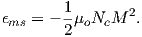
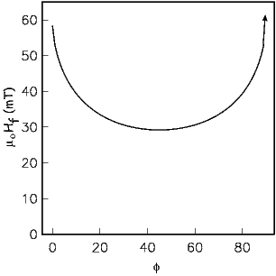
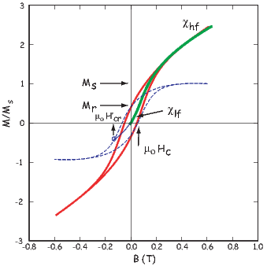
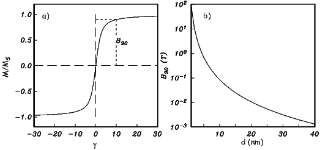
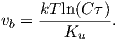
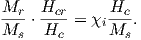
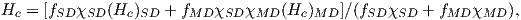

In Chapter 4 we discussed the energies that control the state of magnetization within ferromagnetic particles. Particles will tend to find a configuration of internal magnetization directions that minimizes the energies (although meta-stable states with local energy minima or LEMs are a possibility). The longevity of a particular magnetization state has to do with the depth of the energy well that the magnetization is in and the energy available for hopping over barriers.
The ease with which particles can be coerced into changing their magnetizations in response to external fields can tell us much about the overall stability of the particles and perhaps also something about their ability to carry a magnetic remanence over the long haul. The concepts of long term stability, incorporated into the concept of relaxation time and the response of the magnetic particles to external magnetic fields are therefore linked through the anisotropy energy constant K (see Chapter 4) which dictates the magnetic response of particles to changes in the external field. This chapter will focus on the response of magnetic particles to changing external magnetic fields.
Magnetic remanence is the magnetization in the absence of an external magnetic field. If we imagine a particle with a single “easy” axis – a so-called “uniaxial” particle with magnetic anisotropy constant Ku, the magnetic energy density (energy per unit volume) of a particle whose magnetic moment makes an angle θ to the easy axis direction (Figure 5.1a) can be expressed as:
As the moment swings around with angle θ to the easy axis, the anisotropy energy density ϵa will change as sketched in Figure 5.1b. The energy minima are when θ is aligned parallel to the easy axis (an axis means either direction along the axis, so we pick one direction as being 0 and the other as 180∘). In the absence of a magnetic field, the moment will lie along one of these two directions. [In reality, thermal energy will perturb this direction somewhat, depending on the balance of anisotropy to thermal energy, but for the present discussion, we are assuming that thermal energy can be neglected.]

When an external field is applied at an angle ϕ to the easy axis (and an angle ϕ-θ with the magnetic moment; see Figure 5.1a), the magnetostatic interaction energy density ϵm given by the dot product of the magnetization and the applied field (Equation 4.1 in Chapter 4) or:

The two energy densities (ϵa and ϵm) are shown as the thin solid and dashed lines in Figure 5.1c for an applied field of 30 mT aligned with an angle of 45∘ to the easy axis. There is a competition between the anisotropy energy (tending to keep the magnetization parallel to the easy axis) and the interaction energy (tending to line the magnetization up with the external magnetic field). Assuming that the magnetization is at saturation, we get the total energy density of the particle to be:
|
| (5.1) |
The total energy density ϵt is shown as the heavy solid line in Figure 5.1c.
The magnetic moment of a uniaxial single domain grain will find the angle θ that is associated with the minimum total energy density (ϵmin; see Figure 5.1b,c). For low external fields, θ will be closer to the easy axis and for higher external fields (e.g., 30 mT; Figure 5.1c), θ will be closer to the applied field direction (ϕ).

When a magnetic field that is large enough to overcome the anisotropy energy is applied in a direction opposite to the magnetization vector, the moment will jump over the energy barrier and stay in the opposite direction when the field is switched off. The field necessary to accomplish this feat is called the flipping field (μoHf) (also sometimes the “switching field”). [Note the change to the use of H for internal fields where M cannot be considered zero.) We introduced this parameter in Chapter 4 (see Equation 4.8) as the microscopic coercivity. Stoner and Wohlfarth (1948) showed that the flipping field can be found from the condition that dϵt∕dθ = 0 and d2ϵt∕dθ2 = 0. We will call this the “flipping condition”. The necessary equations can be found by differentiating Equation 5.1:
 | (5.2) |
and again
 | (5.3) |
Solving these two equations for B and substituting μoH for B, we get after some trigonometric trickery:
 | (5.4) |
where t = tan1 3 ϕ. In this equation, ϕ is the angle between the applied field and the easy axis direction opposite to m.
Now we can derive the so-called “microscopic coercivity” (Hk) introduced in Section 4.1.6 in Chapter 4. Microscopic coercivity is the maximum flipping field for a particle. When magnetic anisotropy of a particle is dominated by uniaxial anisotropy constant Ku and ϕ is zero (antiparallel to the easy direction nearest the moment), μoHk = 2Ku Ms. Using the values appropriate for magnetite (Ku = 1.4 x 104 Jm-3 and Ms = 480 mAm-1 we get μoHk = 58 mT. To see why this would indeed result in a flipped moment, we plot the behavior of Equations 5.1 - 5.3 in Figure 5.2. The minimum in total energy ϵt occurs at an angle of θ = 180∘ (Figure 5.2a) and the first and second derivatives satisfy the flipping condition by having a common zero crossing (θ = 0 in Figure 5.2b). There is no other applied field value for which this is true (see, e.g., the case of a 30 mT field in Figure 5.2c,d).

The flipping condition depends not only on the applied field magnitude but also on the direction that it makes with the easy axis (see μoHf versus ϕ in Figure 5.3). When ϕ is parallel to the easy axis (zero) (and anti-parallel to m, μoHf is 58 mT as we found before. μoHf drops steadily as the angle between the field and the easy axis increases until an angle of 45∘ when μoHf starts to increase again. According to Equation 5.4, μoHf is undefined when ϕ = 90∘, so when the field is applied at right angles to the easy axis, there is no field sufficient to flip the moment.
In this section we will develop the theory for predicting the response of substances to the application of external fields, in experiments that generate hysteresis loops. We will define a number of parameters which are useful in rock and paleomagnetism. For computational details in estimating these parameters from hysteresis data, see Appendix C.1.
Let us begin by considering what happens to single particles when subjected to applied fields in the cycle known as the hysteresis loop. From the last section, we know that when a single domain, uniaxial particle is subjected to an increasing magnetic field the magnetization is gradually drawn into the direction of the applied field. If the flipping condition is not met, then the magnetization will return to the original direction when the magnetic field is removed. If the flipping condition is met, then the magnetization undergoes an irreversible change and will be in the opposite direction when the magnetic field is removed.
Imagine a single domain particle with uniaxial anisotropy. Because the particle is single domain, the magnetization is at saturation and, in the absence of an applied field is constrained to lie along the easy axis. Now suppose we apply a magnetic field in the opposite direction (see track # 1 in Figure 5.4a). When B reaches μoHf in magnitude, the magnetization flips to the opposite direction (track #2 in Figure 5.4) and will not change further regardless of how high the field goes. The field then is decreased to zero and then increased along track #3 in Figure 5.4 until μoHf is reached again. The magnetization then flips back to the original direction (track #4 in Figure 5.4a).
Applying fields at arbitrary angles to the easy axis results in loops of various shapes (see Figure 5.4b). As ϕ approaches 90∘, the loops become thinner. Remember that the flipping fields for ϕ = 22∘ and ϕ = 70∘ are similar (see Figure 5.3) and are lower than that when ϕ = 0∘, but the flipping field for ϕ = 90∘ is infinite, so that “loop” is closed and completely reversible.
Before we go on, it is useful to consider for a moment how hysteresis measurements are made in practice. Measurements of magnetic moment m as a function of applied field B are made on a variety of instruments, such as a vibrating sample magnetometer (VSM) or alternating gradient force magnetometer (AGFM). In the latter, a specimen is placed on a thin stalk between pole pieces of a large magnet. There is a probe mounted behind the specimen that measures the applied magnetic field. There are small coils on the pole pieces that modulate the gradient of the applied magnetic field (hence alternating gradient force). The specimen vibrates in response to changing magnetic fields and the amplitude of the vibration is proportional to the moment in the axis of the applied field direction. The vibration of the specimen stalk is measured and calibrated in terms of magnetic moment. The magnetometer is only sensitive to the induced component of m parallel to the applied field Bo, which is m|| = mcosϕ (because the off axis terms are squared and very small, hence can be neglected.) In the hysteresis experiment, therefore, the moment parallel to the field m|| is measured as a function of applied field B.

In rocks with an assemblage of randomly oriented particles with uniaxial anisotropy, we would measure the sum of all the millions of tiny individual loops. A specimen from such a rock would yield a loop similar to that shown in Figure 5.5a. If the field is first applied to a demagnetized specimen, the initial slope is the (low field) magnetic susceptibility (χlf) first introduced in Chapter 1. From the treatment in Section 5.1 it is possible to derive the equation χlf = μoMs2∕3Ku for this initial (ferromagnetic) susceptibility (for more, see O’Reilly 1984).
If the field is increased beyond the flipping field of some of the magnetic grains and returned to zero, the net remanence is called an isothermal remanent magnetization (IRM). If the field is increased to +Bmax, all the magnetizations are drawn into the field direction and the net magnetization is equal to the sum of all the individual magnetizations and is the saturation magnetization Ms. When the field is reduced to zero, the moments relax back to their individual easy axes, many of which are at a high angle to the direction of the saturating field and cancel each other out. A loop that does not achieve a saturating field (red in Figure 5.5a is called a minor hysteresis loop, while one that does is called the outer loop.

The net remanence after saturation is termed the saturation remanent magnetization Mr (and sometimes the saturation isothermal remanence sIRM). For a random assemblage of single domain uniaxial particles, Mr∕Ms = 0.5. The field necessary to reduce the net moment to zero is defined as the coercive field (μoHc) (or coercivity).
The coercivity of remanence μoHcr is defined as the magnetic field required to irreversibly flip half the magnetic moments (so the net remanence after application of a field equal to -μoHcr to a saturation remanence is 0). The coercivity of remanence is always greater than or equal to the coercivity and the ratio Hcr∕Hc for our random assemblage of uniaxial SD particles is 1.09 (Wohlfarth, 1958). Here we introduce two ways of estimating coercivity of remanence, illustrated in Figure 5.5. If, after taking the field up to some saturating field +Bmax, one first turned the field off (the descending curve), then increased the field in the opposite direction to the point labeled μoH′cr, and one were to then switch the field off again, the magnetization would follow the dashed curve up to the origin. For single domain grains, the dashed curve would be parallel to the lower curve (the ascending curve). So, if one only measured the outer loop, one could estimate the coercivity of remanence by simply tracing the curve parallel to the lower curve (dashed line) from the origin to the point of intersection with the upper curve (circled in Figure 5.5a). This estimate is only valid for single domain grains, hence the prime in μoHcr′.
An alternative means of estimating coercivity of remanence is to use a so-called ΔM curve (Jackson et al., 1990) which is obtained by subtracting the ascending loop from the descending loop (see Figure 5.5b). When all the moments are flipped into the new field, the ascending and descending loops join together and ΔM is 0. ΔM is at 50% of its initial value at the field at which half the moments are flipped (the definition of coercivity of remanence); this field is here termed μoHcr.
Figure 5.5a is the loop created in the idealized case in which only uniaxial ferromagnetic particles participated in the hysteresis measurements; in fact the curve is entirely theoretical. In “real” specimens there can be paramagnetic, diamagnetic AND ferromagnetic particles and the loop may well look like that shown in Figure 5.6. The initial slope of a hysteresis experiment starting from a demagnetized state in which the field is ramped from zero up to higher values is the low field magnetic susceptibility or χlf (see Figure 5.6). If the field is then turned off, the magnetization will return again to zero. But as the field increases passed the lowest flipping field, the remanence will no longer be zero but some isothermal remanence. Once all particle moments have flipped and saturation magnetization has been achieved, the slope relating magnetization and applied field reflects only the non-ferromagnetic (paramagnetic and/or diamagnetic) susceptibility, here called high field susceptibility, χhf. In order to estimate the saturation magnetization and the saturation remanence, we must first subtract the high field slope. So doing gives us the blue dashed line in Figure 5.6 from which we may read the various hysteresis parameters illustrated in Figure 5.5b.
In the case of equant grains of magnetite for which magnetocrystalline anisotropy dominates, there are four easy axes, instead of two as in the uniaxial case (see Chapter 4). The maximum angle ϕ between an easy axis and an applied field direction is 55∘. Hence there is no individual loop that goes through the origin (see Figure 5.7). A random assemblage of particles with cubic anisotropy will therefore have a much higher saturation remanence. In fact, the theoretical ratio of Mr∕Ms for such an assemblage is 0.87, as opposed to 0.5 for the uniaxial case (Joffe and Heuberger, 1974).


In superparamagnetic (SP) particles, the total magnetic energy Et = ϵtv (where v is volume) is balanced by thermal energy kT. This behavior can be modeled using statistical mechanics in a manner similar to that derived for paramagnetic grains in Section 3.2.2 in Chapter 3 and summarized in Appendix A.2.2. In fact,
 | (5.5) |
where γ = MsBv kT and N is the number of particles of volume v, is a reasonable approximation. The end result, Equation 5.5, is the familiar Langevin function from our discussion of paramagnetic behavior (see Chapter 3); hence the term “superparamagnetic” for such particles.
The contribution of SP particles for which the Langevin function is valid with given Ms and d is shown in Figure 5.8a. The field at which the population reaches 90% saturation B90 occurs at γ ~ 10. Assuming particles of magnetite (Ms = 480 mAm-1) and room temperature (T = 300∘K), B90 can be evaluated as a function of d (see Figure 5.8b). Because of its inverse cubic dependence on d, B90 rises sharply with decreasing d and is hundreds of tesla for particles a few nanometers in size, approaching paramagnetic values. B90 is a quick guide to the SP slope (the SP susceptibility χsp) contributing to the hysteresis response and was used by Tauxe et al. (1996) as a means of explaining distorted loops sometimes observed for populations of SD/SP mixtures. B90 (and χsp) is very sensitive to particle size with very steep slopes for the particles at the SP/SD threshold. The exact threshold size is still rather controversial, but Tauxe et al. (1996) argue that it is ~ 20 nm.

For low magnetic fields, the Langevin function can be approximated as ~1 3γ . So we have:

 | (5.6) |
We can rearrange Equation 4.11 in Chapter 4 to solve for the volume at which a uniaxial grain passes through the superparamagnetic threshold we find:
 | (5.7) |
Comparing this expression with that derived for ferromagnetic susceptibility in Section 5.2.1, we find that χsp is a factor of ln(Cτ) ≃ 27 larger than the equivalent single domain particle.

Moving domain walls around is much easier than flipping the magnetization of an entire particle coherently. The reason for this is the same as the reason that it is easier to move a rug by lifting up a small wrinkle and pushing that through the rug, than to drag the whole rug by the same amount. Because of the greater ease of changing magnetic moments in multidomain (MD) grains, they have lower coercive fields and saturation remanence is also much lower than for uniformly magnetized particles (see typical MD hysteresis loop in Figure 5.9a.)
The key to understanding multi-domain hysteresis is the reduction in multi-domain magnetic susceptibility χmd from “true” magnetic susceptibility (χi) because of self-demagnetization. The true susceptibility would be that obtained by measuring the magnetic response of a particle to the internal field Hi (applied field minus the demagnetizing field -NM – see Section 4.1.5; see Dunlop 2002a). Recalling that the demagnetizing factor is N, the so-called screening factor fs is (1 + Nχi)-1 and χmd = fsχi. If we assume that χmd is linear for fields less than the coercivity, then by definition χmd = Mr Hc (see Figure 5.9b). From this, we get:

By a similar argument, coercivity of remanence (Hcr) is suppressed by the screening factor which gives coercivity so:


Putting all this together leads us to the remarkable relationship noted by Day et al. (1977; see also Dunlop 2002a):
|
| (5.8) |
When χi Hc Ms is constant, Equation 5.8 is a hyperbola. For a single mineralogy, we can expect Ms to be constant, but Hc depends on grain size and the state of stress which are unlikely to be constant for any natural population of magnetic grains. Dunlop (2002a) argues that if the main control on susceptibility and coercivity is domain wall motion through a terrain of variable wall energies, then χi and Hc would be inversely related and gives a tentative theoretical value for χiHc in magnetite of about 45 kAm-1. This, combined with the value of Ms for magnetite of 480 kAm-1 gives a value for χi Hc Ms ~ 0.1. When anchored by the theoretical maximum for uniaxial single domain ratio of Mr∕Ms = 0.5, we get the curve shown in Figure 5.9c. The major control on coercivity is grain size, so the trend from the SD limit down toward low Mr∕Ms ratios is increasing grain size.
There are several possible causes of variability in wall energy within a magnetic grain, for example, voids, lattice dislocations, stress, etc. The effect of voids is perhaps the easiest to visualize, so we will consider voids as an example of why wall energy varies as a function of position within the grain. We show a particle with lamellar domain structure and several voids in Figure 5.10. When the void occurs within a uniformly magnetized domain (left of figure), the void sets up a demagnetizing field as a result of the free poles on the surface of the void. There is therefore, a self-energy associated with the void. When the void is traversed by a wall, the free pole area is reduced, reducing the demagnetizing field and the associated self-energy. Therefore, the energy of the void is reduced by having a wall bisect it. Furthermore, the energy of the wall is also reduced, because the area of the wall in which magnetization vectors are tormented by exchange and magnetocrystalline energies is reduced. The wall gets a “free” spot if it bisects a void. The wall energy Ew therefore is lower as a result of the void.

In Figure 5.11, we show a sketch of a hypothetical transect of Ew across a particle. There are four LEMs labelled a-d. Domain walls will distribute themselves through out the grain in order to minimize the net magnetization of the grain and also to try to take advantage of LEMs in wall energy.
Domain walls move in response to external magnetic fields (see Figure 5.11b-g). Starting in the demagnetized state (Figure 5.11b), we apply a magnetic field that increases to saturation (Figure 5.11c). As the field increases, the domain walls move in sudden jerks as each successive local wall energy high is overcome. This process, known as Barkhausen jumps, leads to the stair-step like increases in magnetization (shown in the inset of Figure 5.11g). At saturation, all the walls have been flushed out of the crystal and it is uniformly magnetized. When the field decreases again, to say +3 mT (Figure 5.11d), domain walls begin to nucleate, but because the energy of nucleation is larger than the energy of denucleation, the grain is not as effective in cancelling out the net magnetization, hence there is a net saturation remanence (Figure 5.11e). The walls migrate around as a magnetic field is applied in the opposite direction (Figure 5.11f) until there is no net magnetization. The difference in nucleation and denucleation energies was called on by Halgedahl and Fuller (1983) to explain the high stability observed in some large magnetic grains.
Day et al. (1977) popularized the use of diagrams like that shown in Figure 5.9c which are known as Day diagrams. They placed quasi-theoretical bounds on the plot whereby points with Mr∕Ms ratios above 0.5 were labelled single domain (SD), and points falling in the box bounded by 0.5 > Mr∕Ms > 0.05 and 1.5 < Hcr∕Hc < 5 were labelled pseudo-single domain (PSD). Points with Mr∕Ms below 0.05 were labelled multi-domain (MD). This paper has been cited over 800 times in the literature and the Day plot still serves as the principle way that rock and paleomagnetists determined domain state and grain size.
The problem with the Day diagram is that virtually all paleomagnetically useful specimens yield hysteresis ratios that fall within the PSD box. In the early 90s, paleomagnetists began to realize that many things besides the trend from SD to MD behavior that control where points fall on the Day diagram. Pick and Tauxe (1994) pointed out that mixtures of SP and SD grains would have reduced Mr∕Ms ratios and enhanced Hcr∕Hc ratios. Tauxe et al. (1996) modelled distributions of SP/SD particles and showed that the SP-SD trends always fall above those observed from MD particles (modelled in Figure 5.9c).
Dunlop (2002a) argued that because Mr for SP grains is zero, the suppression of the ratio Mr∕Ms is directly proportional to the volume fraction of the SP particles. Moreover, coercivity of remanence remains unchanged, as it is entirely due to the non-SP fraction. Deriving the relationship of coercivity, however, is not so simple. It depends on the superparamagnetic susceptibility (χsp), which in turn depends on the size of the particle and also the applied field (see Section 5.2.4). In his simplified approach, Dunlop could only use a single (small) grain size, whereas in natural samples, there will always be a distribution of grain sizes. It is also important to remember that volume goes as the cube of the radius and for a mixture to display any SP suppression of Mr∕Ms almost all of the particles must be SP. It is impossible that these would all be of a single radius (say 10 or 15 nm); there must be a distribution of sizes. Moreover, Dunlop (2002a) neglected the complication in SP behavior as the particles reach the SD threshold size, whereas it is expected that many (if not most) natural samples containing both SP and SD grain sizes will have a large volume fraction of the larges SP sizes, making their neglect problematic.

Hysteresis ratios of mixtures of SD and MD particles will also plot in the “PSD” box. Dunlop (2002a) derived the theoretical behavior of such mixtures on the Day diagram. The key equations are 1) Equation 9 from Dunlop (2002) which governs the behavior of the ratio Mr∕Ms as a function of the volume fraction of single domain material (fSD) and multi-domain material (fMD):

2) Equation 10 from Dunlop (2002a) which governs the behavior of coercivity:
and 3) Equation 11 from Dunlop (2002a) which governs the behavior of coercivity of remanence in SD/MD mixtures:

where χSD and χMD are the susceptibilities of the SD and MD fractions respectively and (χr)SD and (χr)MD are the Mr vs Hcr slopes of the SD and MD remanences respectively. What we need to calculate the SD/MD mixing curve are values for the various parameters for single domain and multi domain end-members. These were measured empirically for the MV1H bacterial magnetosomes (see Chapter 6) and commercial magnetite (041183 of Wright Company) by Dunlop and Carter-Stiglitz (2006) and shown in Table ??. Using the linear mixing model of Dunlop (2002a), we plot the theoretical mixing curve predicted for these empirically constrained end-members as the heavy red line in Figure 5.9c.
| SD/MD | Mr∕Ms | χ (A m-1T-1) | χr (MA m-1T-1) | μoHc (mT) | μoHcr (mT) |
| SD | 0.5 | 5.2 | 4.55 | 46 | 52.5 |
| MD | 0.02 | 4.14 | 0.88 | 5.56 | 26.1 |
If a population of SD particles are so closely packed as to influence one another, there will be an effect of particle interaction. This will also tend to suppress the Mr∕Ms ratio, drawing the hysteresis ratios down into the PSD box. Finally, the PSD box could be populated by pseudo-single domain grains themselves. Here we will dwell for a moment on the meaning of the term “pseudo-single domain”, which has evolved from the original posed by Stacey (1961; see discussion in Tauxe et al. 2002). In an attempt to explain trends in TRM acquisition Stacey envisioned that irregular shapes caused unequal domain sizes, which would give rise to a net moment that was less than the single domain value, but considerably higher than the very low efficiency expected for large MD grains. The modern interpretation of PSD behavior is complicated micromagnetic structures that form between classic SD (uniformly magnetized grains) and MD (domain walls) such as the flower or vortex remanent states (see, e.g., Figure 4.5 in Chapter 4). Taking all these factors into account means that interpretation of the Day diagram is far from unique. The simple calculations of Dunlop (2002a) are likely to be inappropriate for almost all natural samples.
Hysteresis loops can yield a tremendous amount of information yet much of this is lost by simply estimating the set of parameters Mr,Ms,Hcr,Hc,χi,χhf, etc. Mayergoyz (1986) developed a method using what are known as First Order Reversal Curves or FORCs to represent hysteresis data. The most recent way of dealing with FORCs is that of Harrison and Feinberg (2008) which is illustrated in Figure 5.12. In the FORC experiment, a specimen is subjected to a saturating field, as in most hysteresis experiments. The field is lowered to some field μoHa, then increased again through some value μoHb to saturation (see Figure 5.12a). The magnetization curve between μoHa and μoHb is a “FORC”. A series of FORCs (see Figure 5.12b) can be generated to the desired resolution.

To transform FORC data into some useful form, Harrison and Feinberg (2008) use a locally-weighted regression smoothing technique (LOESS). For a given measurement point P LOESS fits a second-order polynomial function of the form
 | (5.9) |
to the measured magnetization surface in a specified region (for example the circle shown in Figure 5.12b) where the ai are fitted coefficients. The LOESS technique takes a user defined number of the nearest neighbors (see inset to Figure 5.12b) for an arbitrary shaped region over which the data are smoothed. The coefficient -a6(Ha,Hb) is the FORC density at the point. A FORC diagram is the contour plot of the FORC densities, rotated such that μoHc = μo(Hb - Ha)∕2 and μoHu = μo(Ha + Hb)∕2. Please note that because Ha < Hb, data are only possible for positive Hc.

Imagine we travel down the descending magnetization curve (dashed line in Figure 5.12a) to a particular field μoHa less than the smallest flipping field in the assemblage. If the particles are single domain, the behavior is reversible and the first FORC will travel back up the descending curve. It is only when |μoHa| exceeds the flipping field of some of the particles that the FORC will trace a new curve on the inside of the hysteresis loop. In the simple single domain, non-interacting, uniaxial magnetite case, the FORC density in the quadrants where Ha and Hb are of the same sign must be zero. Indeed, FORC densities will only be non-zero for the range of flipping fields because these are the bounds of the flipping field distribution. So the diagram in Figure 5.12c is nearly that of an ideal uniaxial SD distribution.
Consider now the case in which a specimen has magnetic grains with non-uniform magnetizations such as vortex structures or domain walls. Walls and vortices can move much more easily than flipping the moment of an entire grain coherently. In fact, they begin to move in small jumps (from LEM to LEM) as soon as the applied field changes. If a structure nucleates while the field is decreasing and the field is then ramped back up, the magnetization curve will not be reversible, even though the field never changed sign or approached the flipping field for coherent rotation. The resulting FORC for such behavior would have much of the “action” in the region where Ha is positive. When transformed to Hu and Hc, the diagram will have the high densities for small Hc but over a range of Hu. The example shown in Figure 5.13 is of a specimen that has been characterized as “pseudo-single domain”. The FORC diagram in Figure 5.13b has some of the FORC densities concentrated along the Hc axis characteristic of single domain specimens (e.g., Figure 5.12c), but there is also concentration along the Hu axis characteristic of PSD and MD specimens.
In many cases the the most interesting thing one learns from FORC diagrams is the degree to which there is irreversible behavior when the field is reduced to zero then ramped back up to saturation (see Figure 5.14). Such irreversible behavior in what Yu and Tauxe (2005) call the “Zero FORC” or ZFORC can arise from particle interactions, domain wall jumps or from the formation and destruction of vortex structures in the magnetic grains.
Fabian (2003) defined a parameter called “transient hysteresis” which is the area between the ascending and descending loops of a ZFORC (shaded area in Figure 5.14). This is defined as:
![H∑s
TH = μo [Mdescending - Mascending]⋅ΔH.
0](WebBook3155x.png)
SUPPLEMENTAL READING: Dunlop and zdemir (1997), chapters 5 and 11; O’Reilly (1984), pp 69-87; Dunlop (2002a,b)
Problem 1
For a grain with uniaxial anisotropy in an external field, the direction of magnetization in this grain will be controlled entirely by the uniaxial anisotropy energy density ϵa and the magnetic interaction energy ϵm. The total energy can be written:
Problem 2
In problem, we will begin to use REAL data. The data files used with this book are part of the PmagPy distribution, which you should have already downloaded and installed. [If not, follow the full installation instructions for PmagPy in the PmagPy Cookbook, and copy the data_files directory to a directory dedicated to these problem sets. Also, PmagPy is being constantly updated, so you should update your installation with the pip install method before attempting these problems.]
In this problem, you will become familiar with some of the PmagPy programs useful to the working paleomagnetist. These programs are designed to work with the Magnetics Information Consortium (MagIC) database (see http://earthref.org/MAGIC; see also PmagPy documentation) – a database designed for paleomagnetic and rock magnetic measurements. For now we are just using a few of the programs.
Someone has measured hysteresis loops on a mysterious set of specimens using an alternating gradient force magnetometer. These are contained in the data_files/Essentials_Examples/Chapter_5 directory. For this problem, we will use the programs pmag_gui.py for converting measurement files to the MagIC format, and hysteresis_magic.py and dayplot_magic.py for visualizing and analyzing the data.
You should make a directory for every project you work on and that includes each homework problem. So create a new directory (say, Problem_5.2). From the command line navigate to your directory and , type pmag_gui.py. [PC users may need to omit the .py termination for all PmagPy programs.]
Under the ‘Import’ file menu, choose ’Hysteresis files’ and ‘Import entire directory’. The click on the ‘add’ button and select the Chapter_5 folder. There are two characters that distinguish specimens (things that are measured) from samples (things that are taken in the field. The location name can be ‘Problem_5.2’. If you look in your project folder (here assumed Problem_5.2), you will find a bunch of new files named IS06a-1.agm.magic and so on. Now click on the ‘convert magnetometer files to MagIC format’ button on the Pmag GUI main panel and click on ‘Skip to next step’ button. This will find all the files with the .magic termination. Click on ‘OK’ to combine these all into a single measurements file for use with hysteresis_magic.py. Keep clicking on the ‘OK’ buttons until the GUI is satisfied. Now exit the GUI and return to your notebook.
a) Run the hysteresis_magic.py program from within your notebook using the ! symbol before the command. Start by getting the help message:
Then run the program using these options:
Load the images for the specimen IS06a-2 into the notebook as shown in the template file for this chapter’s problems (found in data_files/Essentials_Examples/Notebooks directory you installed before.
Write a detailed figure caption for the three figures for specimen IS06a-2. What is the difference between the red and blue lines? What are the blue squares? What is the “DeltaM” curve?
b) Analyzing all the data in the last problem with hysteresis_magic created a
file that stored the hysteresis parameters like saturation remanence, coercivity,
etc. in a file called
rmag_hysteresis.txt in the project directory. Now run ‘dayplot_magic.py’ from
within your notebook and load up the figures. Write a caption for these plots.
How would you interpret them?